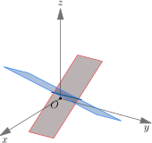
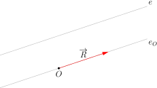
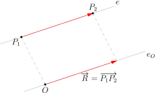
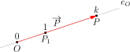
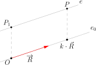
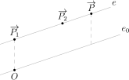
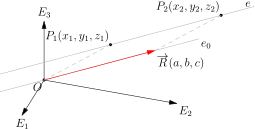
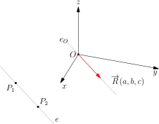
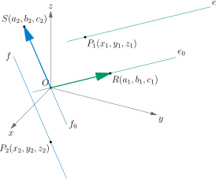

Hoofdstuk 3Vergelijkingen van rechten en vlakken

Leerplandoelstellingen (GO! Navigator)
Gevorderde wiskunde (WD3_06.08)
-
• WD3_06.08.08 (MD 06.08.30) De leerlingen stellen vectoriële, parametrische en cartesische vergelijkingen van rechten en vlakken in de ruimte op.
-
• WD3_06.08.09 (MD 06.08.32) De leerlingen bepalen de onderlinge ligging van twee rechten, van een rechte en een vlak en van twee vlakken in de ruimte met behulp van vergelijkingen.
Didactische uitwerking: richtingsvectoren en richtingsgetallen van rechten, vectoriële, parametrische en cartesische vergelijkingen van rechten in de ruimte, onderlinge ligging van rechten, vectoriële en cartesische vergelijkingen van vlakken, vlak door drie punten, coplanariteit van punten, snijlijn van twee vlakken, en onderlinge ligging van een rechte en een vlak of van twee vlakken.
In dit hoofdstuk zullen we steeds veronderstellen dat er een basis \((\overrightarrow {E_1},\overrightarrow {E_2},\overrightarrow {E_3})\) met bijhorend assenstelsel \((xyz)\) met oorsprong \(O\) gegeven is.
I Rechten
1 Richtingsvector van een rechte
Definitie
Een richtingsvector van de rechte \(e\) is een willekeurige (van de nulvector verschillende) plaatsvector \(\overrightarrow {R}\) van de rechte \(e_O\), die door de oorsprong gaat en evenwijdig met \(e\) wordt getrokken.

Richtingsvector van een rechte \(e\) door twee punten \(P_1\) en \(P_2\)
\[\overrightarrow {R}=\overrightarrow {P_1P_2} \quad \Leftrightarrow \quad \boxed {\overrightarrow {R}=\overrightarrow {P_2}-\overrightarrow {P_1}}\]

2 Vectoriële vergelijking van een rechte
Rechte \(e_O\) door oorsprong \(O\) en punt \(P_1\)
\[P\in e_O \quad \Leftrightarrow \quad \boxed {e_O \leftrightarrow \overrightarrow {P}=k\cdot \overrightarrow {P_1}}\]

Rechte \(e\) door punt \(P_1\) met richtingsvector \(R\)
\[P\in e \quad \Leftrightarrow \quad \boxed {e\leftrightarrow \overrightarrow {P}=\overrightarrow {P_1} + k\cdot \overrightarrow {R}}\]

Rechte \(e\) door twee punten \(P_1\) en \(P_2\)
\(\seteqnumber{0}{}{0}\)\begin{align*} P\in e &\Leftrightarrow e\leftrightarrow \overrightarrow {P} =\overrightarrow {P_1} + k\cdot \overrightarrow {P_1P_2} \\[0.5em] &\Leftrightarrow \boxed {e\leftrightarrow \overrightarrow {P}=\overrightarrow {P_1} + k\cdot (\overrightarrow {P_2}-\overrightarrow {P_1})} \\[0.5em] &\Leftrightarrow \boxed {e\leftrightarrow \overrightarrow {P}=(1-k)\cdot \overrightarrow {P_1} + k\cdot \overrightarrow {P_2}} \end{align*}

Oefeningen
Uit het handboek Van Basis tot Limiet, Ruimtemeetkunde: nr. 4 (a-b-c-d) p. 70.
3 Stel richtingsgetallen van een rechte
Definitie
De coördinaat \((a,b,c)\) of \((x_2-x_1,y_2-y_1,z_2-z_1)\) van een richtingsvector \(\overrightarrow {R}\) van een rechte \(e\) noemen we een stel richtingsgetallen van \(e\).

Eigenschappen
-
• De stellen richtingsgetallen van een rechte zijn bepaald op een evenredigheidsfactor na.
M.a.w. als \((a,b,c)\) een stel richtingsgetallen is van de rechte \(e\), dan is \((k.a,k.b,k.c)\) met \(k\in \mathbb {R}_0\) ook een stel richtingsgetallen van \(e\). Logisch, want als \(\overrightarrow {R}\) een richtingsvector is, dan is \(k\cdot \overrightarrow {R}\) dat ook. -
• Twee rechten zijn evenwijdig als en slechts als hun stellen richtingsgetallen evenredig zijn.
\[\boxed {e \parallel f \quad \Leftrightarrow \quad (a_2,b_2,c_2)=k\cdot (a_1,b_1,c_1) \text { met }k\in \mathbb {R}_0}\]
Bewijs
Beschouw rechte \(e\) met richtingsvector \(\overrightarrow {R}(a_1,b_1,c_1)\) en rechte \(f\) met richtingsvector \(\overrightarrow {S}(a_2,b_2,c_2)\). Dan
\(\seteqnumber{0}{}{0}\)\begin{align*} e \parallel f &\Leftrightarrow e_0 = f_0 \\[0.3em] &\Rightarrow \overrightarrow {S} = k\,\overrightarrow {R} \quad \text {met } k \in \mathbb {R}_0 \\[0.3em] &\Rightarrow (a_2,b_2,c_2) = k\,(a_1,b_1,c_1) \quad \text {met } k \in \mathbb {R}_0. \end{align*}
Voorbeeld
T.o.v. een willekeurige basis zijn gegeven: \(A(2, 1, -1), B(-1, 2, -5), C(6, 1, -1), D(9,0,3)\)
Ga na dat de rechten \(AB\) en \(CD\) evenwijdig zijn.
We berekenen richtingsvectoren van de rechten \(AB\) en \(CD\):
\[ \overrightarrow {AB} = \overrightarrow {B}-\overrightarrow {A} = (-1-2,\;2-1,\;-5-(-1)) = (-3,1,-4), \]
\[ \overrightarrow {CD} = \overrightarrow {D}-\overrightarrow {C} = (9-6,\;0-1,\;3-(-1)) = (3,-1,4). \]
We zien dat
\[ \overrightarrow {CD} = -1\cdot \overrightarrow {AB}, \]
dus \(\overrightarrow {AB}\) en \(\overrightarrow {CD}\) zijn evenwijdige richtingsvectoren, en bijgevolg
\[ AB \parallel CD. \]
Bijzondere gevallen
Geef voor elk van volgende rechten een stel richtingsgetallen.
-
• \(x\)-as: (a,0,0)
-
• \(y\)-as: (0,b,0)
-
• \(z\)-as: (0,0,c)
-
• rechte evenwijdig met het \(xy\)-vlak: (a,b,0)
-
• rechte evenwijdig met het \(xz\)-vlak: (a,0,c)
-
• rechte evenwijdig met het \(yz\)-vlak: (0,b,c)
Oefeningen
Uit het handboek Van Basis tot Limiet, Ruimtemeetkunde: nrs. 1 (a-b-c-d) en 2 p. 70.
4 Stelsel cartesische vergelijkingen van een rechte \(e\) door één punt \(P_1\) met richtingsvector \(R\)
Opstellen formules
Beschouw de rechte \(e\) die door het punt \(P_1(x_1,y_1,z_1)\) gaat en richtingsvector \(\overrightarrow {R}(a,b,c)\) heeft. Om het stelsel cartesische vergelijkingen op te stellen, kunnen we vertrekken van de vectoriële vergelijking, waarbij \(P(x,y,z)\) een willekeurig punt van de rechte \(e\) voorstelt.
\(\seteqnumber{0}{}{0}\)\begin{align*} e & \leftrightarrow \boxed {\overrightarrow {P}=\overrightarrow {P_1} + k\cdot \overrightarrow {R}}\quad \text {met } k\in \mathbb {R} \\[0.5em] & \Leftrightarrow co(\overrightarrow {P}) = co(\overrightarrow {P_1}) + k\cdot co(\overrightarrow {R}) \quad \text {met } k\in \mathbb {R} \end{align*}
\begin{align*} \Leftrightarrow (x,y,z) & = (x_1,y_1,z_1) + k\,(a,b,c) \\ & = (x_1 + k a,\; y_1 + k b,\; z_1 + k c) \end{align*}
\begin{align*} & \Leftrightarrow \boxed {e\leftrightarrow \begin{cases} x = x_1 + k\cdot a, \\ y = y_1 + k\cdot b, \\ z = z_1 + k\cdot c \end {cases} } \quad \text {met } k\in \mathbb {R}. \end{align*}
Aangezien dit stelsel nog een parameter \(k\) bevat, noemen we dit het stelsel parametervergelijkingen van de rechte \(e\).
Indien de richtingsgetallen \(a, b\) en \(c\) alle verschillend zijn van 0, kunnen we hieruit de parameter \(k\) elimineren. Dan bekomen we het stelsel cartesische vergelijkingen van de rechte \(e\):
\[ \Rightarrow \begin {cases} k = \dfrac {x - x_1}{a},\\[0.3em] k = \dfrac {y - y_1}{b},\\[0.3em] k = \dfrac {z - z_1}{c} \end {cases} \]
\[ \boxed {e\leftrightarrow \frac {x-x_1}{a}=\frac {y-y_1}{b}=\frac {z-z_1}{c} \text { als } a,b,c \in \mathbb {R}_0} \]
Enkele bijzondere gevallen
Indien \(a, b\) en/of \(c\) wel gelijk is aan nul, hebben we geen vaste formule. We zullen de parameter \(k\) elimineren naargelang het aantal coördinaatgetallen dat gelijk is aan 0. We geven enkele voorbeelden.
-
1. Rechte evenwijdig met het \(xy\)-vlak
In dit geval is \(\overrightarrow {R}(a,b,\textbf {0})\). We vinden dus als stelsel parametervergelijkingen:
\[ e \leftrightarrow \begin {cases} x = x_1 + k\cdot a,\\ y = y_1 + k\cdot b,\\ z = z_1 \end {cases} \quad \text {met } k\in \mathbb {R} \]
\[ \Rightarrow \begin {cases} k = \dfrac {x - x_1}{a},\\[0.3em] k = \dfrac {y - y_1}{b},\\[0.3em] z = z_1 \end {cases} \]
Elimineren we hieruit \(k\), dan bekomen we het stelsel cartesische vergelijkingen:
\[ e\leftrightarrow \begin {cases} \frac {x-x_1}{a}=\frac {y-y_1}{b}\\ z=z_1 \end {cases} \]
-
2. Rechte evenwijdig met de \(x\)-as
In dit geval is \(\overrightarrow {R}(a,\textbf {0},\textbf {0})\). We vinden dus als stelsel parametervergelijkingen:
\[ e\leftrightarrow \begin {cases} x=x_1+k.a\\y=y_1\\z=z_1 \end {cases} \text { met }k\in \mathbb {R} \]
Aangezien \(k\) een willekeurig reëel getal is, kan \(x\) ook eender welk reëel getal zijn. Enkel \(y\) en \(z\) voldoen dus nog aan een voorwaarde. Deze voorwaarden vormen het stelsel cartesische vergelijkingen:
\(e\leftrightarrow \left \{\begin {matrix} y=y_1\\z=z_1 \end {matrix}\right .\)
Voorbeeld 1
Bepaal het stelsel cartesische vergelijkingen van de rechte \(e\) door het punt \(P_1(3,\frac {3}{2},-1)\) en met richtingsvector \(\overrightarrow {R}(-3,0,4)\).
\begin{align*} &e \leftrightarrow \begin{cases} x = x_1 + k a\\ y = y_1 + k b\\ z = z_1 + k c \end {cases} \\[0.5em] \Leftrightarrow \qquad &e \leftrightarrow \begin{cases} x = 3 - 3k\\ y = \dfrac {3}{2} + 0k\\ z = -1 + 4k \end {cases} \\[0.5em] \Leftrightarrow \qquad &e \leftrightarrow \begin{cases} k = \dfrac {x-3}{-3}\\[0.3em] y = \dfrac {3}{2}\\[0.3em] k = \dfrac {z+1}{4} \end {cases} \\[0.5em] \Leftrightarrow \qquad &e \leftrightarrow \begin{cases} \dfrac {x-3}{-3} = \dfrac {z+1}{4}\\[0.3em] y = \dfrac {3}{2} \end {cases} \\[0.5em] \Leftrightarrow \qquad &e \leftrightarrow \begin{cases} 4x + 3z - 9 = 0\\[0.3em] y = \dfrac {3}{2} \end {cases} \end{align*}
Voorbeeld 2
Een raket wordt gevolgd op een radarscherm. Op het scherm geeft een ruimtelijk coördinaatsysteem op elk moment de positie van de raket weer.
Op het tijdstip \(t=0\) bevindt de raket zich in het punt \(A(5, 10, 15)\). Per tijdseenheid verplaatst de raket zich volgens de richtingsvector \((1,1,2)\).
-
(a) Geef een stelsel parametervergelijkingen van de baan van de raket.
We gebruiken \(t\) als parameter (tijd), punt \(A(5,10,15)\) en richtingsvector \(\overrightarrow {R}(1,1,2)\):
\[ e \leftrightarrow \begin {cases} x = 5 + t,\\ y = 10 + t,\\ z = 15 + 2t, \end {cases} \quad t\in \mathbb {R}. \]
-
(b) Bereken hieruit de coördinaten van de plaatsen waar de raket zich bevindt op de tijdstippen \(t=2\) en \(t=5\).
Voor \(t=2\): \((x,y,z) = (5+2,\;10+2,\;15+2\cdot 2) = (7,12,19).\)
Voor \(t=5\): \((x,y,z) = (5+5,\;10+5,\;15+2\cdot 5) = (10,15,25). \) -
(c) Geef het stelsel cartesische vergelijkingen van de baan van de raket.
Uit de parametervergelijkingen t elimineren:
\[ t = x-5,\quad t = y-10,\quad t = \frac {z-15}{2},\qquad \Leftrightarrow \qquad \frac {x-5}{1} = \frac {y-10}{1} = \frac {z-15}{2}. \]
Een stelsel cartesische vergelijkingen is bijvoorbeeld
\[ \begin {cases} x - y + 5 = 0,\\ 2x - z + 5 = 0. \end {cases} \]
-
(d) Open Geogebra tracht de baan van de raket te tekenen als snijlijn van twee vlakken.
De baan is de snijlijn van twee vlakken:
\(\seteqnumber{0}{}{0}\)\begin{align*} \alpha &\leftrightarrow x - y + 5 = 0,\\ \beta &\leftrightarrow 2x - z + 5 = 0, \end{align*} die je in GeoGebra kunt tekenen.
5 Stelsel cartesische vergelijkingen van een rechte \(e\) door twee punten \(P_1\) en \(P_2\)
Opstellen formules
Beschouw de rechte \(e\) die door de punten \(P_1(x_1,y_1,z_1)\) en \(P_2(x_2,y_2,z_2)\) gaat. Om het stelsel cartesische vergelijkingen op te stellen, vertrekken we opnieuw van de vectoriële vergelijking,
waarbij \(P(x,y,z)\) een willekeurig punt van de rechte \(e\) voorstelt.
\[ \boxed {e\leftrightarrow \overrightarrow {P}=\overrightarrow {P_1} + k\cdot (\overrightarrow {P_2}-\overrightarrow {P_1}) \text { met } k\in \mathbb {R}} \]
\(\Leftrightarrow co(\overrightarrow {P})=co(\overrightarrow {P_1}) + k\cdot co(\overrightarrow {P_2}-\overrightarrow {P_1})\) met \(k\in \mathbb {R}\)
\[ \boxed {e\leftrightarrow \left \{\begin {matrix} x=x_1+k.(x_2-x_1)\\y=y_1+k.(y_2-y_1)\\z=z_1+k.(z_2-z_1) \end {matrix}\right . \text { met } k\in \mathbb {R}} \]
Aangezien dit stelsel nog een parameter \(k\) bevat, noemen we dit het stelsel parametervergelijkingen van de rechte \(e\).
Indien alle noemers verschillend zijn van 0, kunnen we hieruit de parameter \(k\) elimineren en bekomen we het stelsel cartesische vergelijkingen van de rechte \(e\):
\[ \boxed {e\leftrightarrow \frac {x-x_1}{x_2-x_1}=\frac {y-y_1}{y_2-y_1}=\frac {z-z_1}{z_2-z_1} \text { met } x_2-x_1,y_2-y_1,z_2-z_1 \neq 0} \]
Enkele bijzondere gevallen
Indien één of meerdere noemers \(x_2-x_1,y_2-y_1\) en/of \(z_2-z_1\) wel gelijk zijn aan nul, hebben we geen vaste formule. We zullen de parameter \(k\) elimineren naargelang het aantal noemers dat gelijk is aan 0. We geven enkele voorbeelden.
-
1. Rechte evenwijdig met het \(xy\)-vlak
Dergelijke rechte gaat door de punten \(P_1(x_1, y_1, z_1)\) en \(P_2(x_2, y_2, z_1)\). In dit geval is \(z\) dus een vast reëel getal \(z_1\) en vinden we één noemer gelijk aan nul. We vinden, na eliminatie van \(k\) uit het stelsel parametervergelijkingen, het stelsel cartesische vergelijkingen:
\(e\leftrightarrow \left \{\begin {matrix} \frac {x-x_1}{x_2-x_1}=\frac {y-y_1}{y_2-y_1}\\z=z_1 \end {matrix}\right .\)
-
2. Rechte evenwijdig met de \(x\)-as
Dergelijke rechte gaat door de punten \(P_1(x_1,y_1,z_1)\) en \(P_2(x_2, y_1,z_1)\). We krijgen dus twee noemers die gelijk zijn aan nul. Na eliminatie van \(k\) uit het stelsel parametervergelijkingen, vinden we het stelsel cartesische vergelijkingen:
\[ e \leftrightarrow \left \{ \begin {matrix} y=y_1\\ z=z_1 \end {matrix} \right . \]
Voorbeeld
Bepaal het stelsel cartesische vergelijkingen van de rechte \(e\) door de punten \(P_1(3,-2,-3)\) en \(P_2(5,-3,0)\).
\begin{align*} e &\leftrightarrow \frac {x-3}{5-3} = \frac {y+2}{-3+2} = \frac {z+3}{0+3} \\[0.3em] &\Leftrightarrow \frac {x-3}{2} = \frac {y+2}{-1} = \frac {z+3}{3} \end{align*} Uit deze gelijkheid kunnen we op verschillende manieren een stelsel van twee vergelijkingen afleiden.
\begin{align*} &\begin{cases} \dfrac {x-3}{2} = \dfrac {y+2}{-1},\\[0.3em] \dfrac {x-3}{2} = \dfrac {z+3}{3} \end {cases} \\[0.5em] &\Leftrightarrow \begin{cases} -(x-3) = 2(y+2),\\ 3(x-3) = 2(z+3) \end {cases} \\[0.5em] &\Leftrightarrow \begin{cases} x + 2y + 1 = 0,\\ 3x - 2z - 15 = 0 \end {cases} \end{align*}
\begin{align*} &\begin{cases} \dfrac {x-3}{2} = \dfrac {y+2}{-1},\\[0.3em] \dfrac {y+2}{-1} = \dfrac {z+3}{3} \end {cases} \\[0.5em] &\Leftrightarrow \begin{cases} -(x-3) = 2(y+2),\\ 3(y+2) = -(z+3) \end {cases} \\[0.5em] &\Leftrightarrow \begin{cases} x + 2y + 1 = 0,\\ 3y + z + 9 = 0 \end {cases} \end{align*}
Beide stelsels zijn een correcte voorstelling van de rechte \(e\).
6 Oefeningen
Uit het handboek Van Basis tot Limiet, Ruimtemeetkunde: nrs. 1 (e en g) p. 70 en 7 (a-b-c-d) p. 70.
7 Omgekeerd: Stel richtingsgetallen van een rechte bepalen, als het stelsel cartesische vergelijkingen gegeven is
Opstelling formule
Gegeven: Stelsel cartesische vergelijkingen van een rechte \(e\):
\[ \begin {cases} u_1x+v_1y+w_1z+t_1=0\\ u_2x+v_2y+w_2z+t_2=0 \end {cases} \]
Gevraagd: Een stel richtingsgetallen van \(e\).
Figuur:

Oplossing:
Stel een richtingsvector \(\overrightarrow {R}(a,b,c)\) van \(e\).
\(\seteqnumber{0}{}{0}\)\begin{align*} (a,b,c) &= \text {co\"ordinaat van een punt } R \text { van } e_0\\ &= \text {oplossing van het stelsel cartesische vergelijkingen van } e_0\\ &= \text {oplossing van } \begin{cases} u_1 x + v_1 y + w_1 z = 0,\\ u_2 x + v_2 y + w_2 z = 0. \end {cases} \end{align*} Dit is een homogeen \(2\times 3\)-stelsel. De oplossingen worden gegeven door
\[ \boxed { a = \lambda \begin {vmatrix} v_1 & w_1\\ v_2 & w_2 \end {vmatrix},\qquad b = -\lambda \begin {vmatrix} u_1 & w_1\\ u_2 & w_2 \end {vmatrix},\qquad c = \lambda \begin {vmatrix} u_1 & v_1\\ u_2 & v_2 \end {vmatrix}, } \qquad \text {met } \lambda \in \mathbb {R}. \]
Voorbeeld
Bepaal een stel richtingsgetallen van de rechte \(e\)
\[ e\leftrightarrow \left \{\begin {matrix} 2x+y+z-3=0\\x-y-2z+1=0 \end {matrix}\right . \]
We hebben
\[ e \leftrightarrow \begin {cases} 2x + y + z - 3 = 0,\\ x - y - 2z + 1 = 0. \end {cases} \]
Dus in de notatie uit de formule:
\[ u_1 = 2,\; v_1 = 1,\; w_1 = 1, \qquad u_2 = 1,\; v_2 = -1,\; w_2 = -2. \]
Met
\[ a = \lambda \begin {vmatrix} v_1 & w_1\\ v_2 & w_2 \end {vmatrix}, \quad b = -\lambda \begin {vmatrix} u_1 & w_1\\ u_2 & w_2 \end {vmatrix}, \quad c = \lambda \begin {vmatrix} u_1 & v_1\\ u_2 & v_2 \end {vmatrix}, \quad \lambda \in \mathbb {R}, \]
vinden we
\(\seteqnumber{0}{}{0}\)\begin{align*} a &= \lambda \begin{vmatrix} 1 & 1\\ -1 & -2 \end {vmatrix} = \lambda (-2 + 1) = -\lambda , \\ b &= -\lambda \begin{vmatrix} 2 & 1\\ 1 & -2 \end {vmatrix} = -\lambda (2\cdot (-2) - 1\cdot 1) = -\lambda (-4 - 1) = 5\lambda , \\ c &= \lambda \begin{vmatrix} 2 & 1\\ 1 & -1 \end {vmatrix} = \lambda (2\cdot (-1) - 1\cdot 1) = \lambda (-2 - 1) = -3\lambda . \end{align*}
Een stel richtingsgetallen van \(e\) is bijvoorbeeld
\[ (a,b,c) = (-1,5,-3) \]
(maar ook elk niet-nul veelvoud hiervan, zoals \((1,-5,3)\) of \((-2,10,-6)\)).
Oefeningen
Uit het handboek Van Basis tot Limiet, Ruimtemeetkunde: nrs. 1(f) en 7(e) p. 70 en volgende.
8 Onderlinge stand van rechten
Beschouw twee rechten:
De rechte \(e\) door het punt \(P_1(x_1,y_1,z_1)\) en met richtingsvector \(\overrightarrow {R}(a_1,b_1,c_1)\).
De rechte \(f\) door het punt \(P_2(x_2,y_2,z_2)\) en met richtingsvector \(\overrightarrow {S}(a_2,b_2,c_2)\).

\(e\) en \(f\) zijn evenwijdig
We bewezen reeds de eigenschap: Twee rechten zijn evenwijdig als en slechts als hun stellen richtingsgetallen evenredig zijn.
\[ \boxed {e \parallel f \Leftrightarrow (a_2,b_2,c_2)=k\cdot (a_1,b_1,c_1) \text { met } k \in \mathbb {R}_0} \]
\(e\) en \(f\) zijn snijdend
We veronderstellen nu dat \(e\) en \(f\) niet evenwijdig zijn en onderzoeken wanneer deze rechten een snijpunt hebben. Dit snijpunt moet bijgevolg voldoen aan zowel de vectoriële vergelijking van \(e\) als van \(f\):
\[e\leftrightarrow \overrightarrow {P}=\overrightarrow {P_1}+k.\overrightarrow {R}\]
\[f\leftrightarrow \overrightarrow {P}=\overrightarrow {P_2}+l.\overrightarrow {S}\]
M.a.w. er bestaat juist één waarde voor de parameter \(k\) en één waarde voor de parameter \(l\) zodat
\[\overrightarrow {P_1}+k.\overrightarrow {R}=\overrightarrow {P_2}+l.\overrightarrow {S}\]
\begin{align*} &\Leftrightarrow \overrightarrow {P_1} + k\,\overrightarrow {R} = \overrightarrow {P_2} + l\,\overrightarrow {S}\\ &\Leftrightarrow k\,\overrightarrow {R} - l\,\overrightarrow {S} = \overrightarrow {P_2}-\overrightarrow {P_1}\\ &\Leftrightarrow \begin{cases} k\,a_1 - l\,a_2 = x_2 - x_1,\\ k\,b_1 - l\,b_2 = y_2 - y_1,\\ k\,c_1 - l\,c_2 = z_2 - z_1. \end {cases} \end{align*}
We zoeken een opl. voor dit stelsel in \(k\) en \(l\). Opdat het stelsel een opl. zou hebben, moet de rang van de verhoogde matrix gelijk zijn aan de rang van de matrix.
stelsel heeft een opl. als \(r(A_b) = r(A)\)
\(\seteqnumber{0}{}{0}\)\begin{align*} \text {maar } e \nparallel f &\Leftrightarrow \; (a_1,b_1,c_1) \nsim k\,(a_2,b_2,c_2)\\[0.3em] &\Rightarrow r(A) = 2\\[0.3em] &\Rightarrow r(A_b) = 2\\[0.3em] &\Rightarrow \det A_b = 0\\[0.3em] &\Rightarrow \begin{vmatrix} a_1 & a_2 & x_2 - x_1\\ b_1 & b_2 & y_2 - y_1\\ c_1 & c_2 & z_2 - z_1 \end {vmatrix} = 0. \end{align*}
Besluit:
\[ \boxed {e \text { en } f \text { zijn snijdend } \Leftrightarrow (a_2,b_2,c_2)\neq k\cdot (a_1,b_1,c_1) \text { en } \begin {vmatrix} a_1& a_2&x_2-x_1 \\ b_1&b_2& y_2-y_1 \\ c_1&c_2& z_2-z_1 \end {vmatrix}=0} \]
\(e\) en \(f\) zijn kruisend
Als de voorwaarden voor evenwijdigheid en voor snijdend zijn niet voldaan zijn, blijft er slechts één mogelijkheid over, nl. dat \(e\) en \(f\) kruisend zijn. We kunnen dus besluiten:
\[ \boxed {e \text { en } f \text { zijn kruisend } \Leftrightarrow (a_2,b_2,c_2)\neq k\cdot (a_1,b_1,c_1) \text { en } \begin {vmatrix} a_1& a_2&x_2-x_1 \\ b_1&b_2& y_2-y_1 \\ c_1&c_2& z_2-z_1 \end {vmatrix}\neq 0} \]
Oefeningen
Uit het handboek Van Basis tot Limiet, Ruimtemeetkunde: nrs. 9 en 10 p. 70 en volgende.
II Vlakken
1 Een paar richtingsvectoren van een vlak
Definitie
Een richtingsvector van een vlak \(\alpha \) is een willekeurige (van de nulvector verschillende) plaatsvector \(\overrightarrow {R}\) van het vlak \(\alpha _O\), dat door de oorsprong gaat en evenwijdig met \(\alpha \)
wordt getrokken.
Het vlak \(\alpha _O\) wordt volledig bepaald door twee van haar punten \(R\) en \(S\) die niet collineair zijn met \(O\). M.a.w. voor de overeenkomstige plaatsvectoren \(\overrightarrow {R}\) en \(\overrightarrow {S}\)
geldt: \(\overrightarrow {S}\neq k.\overrightarrow {R}\) \(\forall k \in \mathbb {R}\). We noemen \(\overrightarrow {R}\) en \(\overrightarrow {S}\) lineair onafhankelijk.
We kunnen besluiten:
Twee lineair onafhankelijke richtingsvectoren \(\overrightarrow {R}\) en \(\overrightarrow {S}\) van het vlak \(\alpha \) bepalen het vlak \(\alpha _O\) en dus ook de richting van het vlak \(\alpha \).
Paar richtingsvectoren van een vlak \(\alpha \) door drie punten \(P_1\), \(P_2\) en \(P_3\)
\(\overrightarrow {R}=\overrightarrow {P_1P_2}\) en \(\overrightarrow {S}=\overrightarrow {P_1P_3}\)
\[ \boxed {\Leftrightarrow \quad \overrightarrow {R}=\overrightarrow {P_2}-\overrightarrow {P_1} \text { en } \overrightarrow {S}=\overrightarrow {P_3}-\overrightarrow {P_1}} \]
2 Vectoriële vergelijking van een vlak
Vlak \(\alpha \) door punt \(P_1\) met paar richtingsvectoren \(R\) en \(S\)
\[ \boxed {P\in \alpha \Leftrightarrow \alpha \leftrightarrow \overrightarrow {P}=\overrightarrow {P_1} + k\cdot \overrightarrow {R} + m\cdot \overrightarrow {S}} \]
Vlak \(\alpha \) door drie punten \(P_1\), \(P_2\) en \(P_3\)
\(P\in \alpha \Leftrightarrow \overrightarrow {P}=\overrightarrow {P_1} + k\cdot \overrightarrow {P_1P_2}+m\cdot \overrightarrow {P_1P_3}\)
\[ \boxed {\Leftrightarrow \quad \alpha \leftrightarrow \overrightarrow {P}=\overrightarrow {P_1} + k\cdot (\overrightarrow {P_2}-\overrightarrow {P_1}) +m\cdot (\overrightarrow {P_3}-\overrightarrow {P_1})} \]
\[ \boxed {\Leftrightarrow \quad \alpha \leftrightarrow \overrightarrow {P}=(1-k-m)\cdot \overrightarrow {P_1} + k\cdot \overrightarrow {P_2} + m\cdot \overrightarrow {P_3}} \]
Oefeningen
Uit het handboek Van Basis tot Limiet, Ruimtemeetkunde: nr. 4 (e-f-g-h) p. 70.
3 Paar stellen richtingsgetallen van een vlak
Definitie
De stellen coördinaatgetallen van een koppel lineair onafhankelijke richtingsvectoren van het vlak \(\alpha \) noemen we een paar stellen richtingsgetallen van het vlak \(\alpha \):
\[\{(a_1,b_1,c_1),(a_2,b_2,c_2)\}=\{(x_2-x_1,y_2-y_1,z_2-z_1),(x_3-x_1,y_3-y_1,z_3-z_1)\}\]
Bijzondere gevallen
Geef voor elk van volgende vlakken een paar stellen richtingsgetallen.
-
• vlak evenwijdig met het xy-vlak: \(..................................................\)
-
• vlak evenwijdig met het xz-vlak: \(..................................................\)
-
• vlak evenwijdig met het yz-vlak: \(..................................................\)
Voorbeeld
Bepaal een paar stellen richtingsgetallen van het vlak \(\alpha \) dat door de punten \(P_1(2,5,-1)\), \(P_2(4,1,4)\) en \(P_3(0,-2,3)\) gaat.
We mogen de punten in een willekeurige volgorde nemen, maar krijgen dan wel een ander paar stellen richtingsgetallen van het vlak.
4 Cartesische vergelijking van een vlak \(\alpha \) door een punt \(P_1\) met stel richtingsvectoren \(R\) en \(S\)
Opstellen formules
Beschouw het vlak \(\alpha \) dat door het punt \(P_1(x_1,y_1,z_1)\) gaat en stel richtingsvectoren \(\overrightarrow {R}(a_1,b_1,c_1)\) en \(\overrightarrow {S}(a_2,b_2,c_2)\) heeft. Om de cartesische vergelijking
op te stellen, kunnen we vertrekken van de vectoriële vergelijking, waarbij \(P(x,y,z)\) een willekeurig punt van het vlak \(\alpha \) voorstelt.
\[ \boxed {\alpha \leftrightarrow \overrightarrow {P}=\overrightarrow {P_1} + k\cdot \overrightarrow {R} + m\cdot \overrightarrow {S} \text { met } k,m\in \mathbb {R}} \]
\(\Leftrightarrow co(\overrightarrow {P})=co(\overrightarrow {P_1}) + k\cdot co(\overrightarrow {R}) + m\cdot co(\overrightarrow {S})\) met \(k,m\in \mathbb {R}\)
\[ \boxed {\Leftrightarrow \quad \alpha \leftrightarrow \left \{\begin {matrix} x=x_1+k.a_1+m.a_2\\y=y_1+k.b_1+m.b_2\\z=z_1+k.c_1+m.c_2 \end {matrix}\right . \text { met } k,m\in \mathbb {R}} \]
Aangezien dit stelsel nog de parameters \(k\) en \(m\) bevat, noemen we dit het stelsel parametervergelijkingen van het vlak \(\alpha \).
We beschouwen dit stelsel nu als een stelsel met onbekenden \(k\) en \(m\).
Daar \(\overrightarrow {R}\) en \(\overrightarrow {S}\) lineair onafhankelijk zijn, vinden we voor de rang van de coëfficiëntenmatrix \(A\):
We mogen dus de coëxistentievoorwaarde voor een 3x2-stelsel toepassen om \(k\) en \(m\) te elimineren (zie algebra), waarna we de cartesische vergelijking van het vlak \(\alpha \) bekomen:
Voorbeeld
Bepaal de cartesische vergelijking van het vlak \(\alpha \) door het punt \(P_1(3,-1,4)\) en met stel richtingsvectoren \(\overrightarrow {R}(-5,0,3)\) en \(\overrightarrow {S}(-1,3,1)\) .
\(1^e\) manier
\(2^e\) manier
Algemene gedaante
We kunnen de cartesische vergelijking van een vlak \(\alpha \) steeds in de gedaante brengen:
\[ \boxed {\alpha \leftrightarrow ux+vy+wz+t=0} \]
Opmerkingen
-
• Wanneer we het stelsel cartesische vergelijkingen van een rechte in de vorm
\[\left \{\begin {matrix}u_1x+v_1y+w_1z+t_1=0\\u_2x+v_2y+w_2z+t_2=0\end {matrix}\right .\]
hebben, blijkt duidelijk dat een rechte steeds kan beschouwd worden als de snijlijn van twee snijdende vlakken.
-
• De cartesische vergelijking van een vlak \(\alpha _O\) door de oorsprong wordt gegeven door
\[ \boxed {\alpha _O \leftrightarrow ux+vy+wz=0} \]
5 Cartesische vergelijking van een vlak \(\alpha \) door drie punten \(P_1\), \(P_2\) en \(P_3\)
Opstellen formules
Beschouw het vlak \(\alpha \) dat door de punten \(P_1(x_1,y_1,z_1)\), \(P_2(x_2,y_2,z_2)\) en \(P_3(x_3,y_3,z_3)\) gaat. Om het stelsel parametervergelijking en de cartesische vergelijking op te stellen, kunnen we de substitutie
\[\{(a_1,b_1,c_1),(a_2,b_2,c_2)\}=\{(x_2-x_1,y_2-y_1,z_2-z_1),(x_3-x_1,y_3-y_1,z_3-z_1)\}\]
toepassen op het stelsel parametervergelijkingen en op de cartesische vergelijking van een vlak waarvan een punt en een stel richtingsvectoren gegeven zijn.
We vinden voor het stelsel parametervergelijkingen van het vlak \(\alpha \):
\[ \boxed {\alpha \leftrightarrow \left \{\begin {matrix} x=x_1+k.(x_2-x_1)+m.(x_3-x_1)\\y=y_1+k.(y_2-y_1)+m.(y_3-y_1)\\z=z_1+k.(z_2-z_1)+m.(z_3-z_1) \end {matrix}\right . \text { met } k,m\in \mathbb {R}} \]
En voor de cartesische vergelijking van het vlak \(\alpha \):
\[ \boxed {\alpha \leftrightarrow \begin {vmatrix} x&y&z&1 \\ x_1&y_1& z_1&1 \\ x_2&y_2& z_2&1 \\x_3&y_3& z_3&1 \end {vmatrix}=0} \]
Voorbeeld
Bepaal de cartesische vergelijking van het vlak \(\alpha \) door de punten \(P_1(4,-1,3)\), \(P_2(-2,3,1)\) en \(P_3(3,1,-4)\).
Toepassing: voorwaarde opdat vier punten coplanair zouden zijn
Beschouw in een geijkte ruimte de punten \(P_1(x_1, y_1, z_1)\), \(P_2(x_2, y_2, z_2)\), \(P_3(x_3, y_3, z_3)\) en \(P_4(x_4, y_4, z_4)\). Dan kunnen we stellen:
\[ \boxed {P_1, P_2, P_3 \text { en } P_4 \text { zijn coplanair } \Leftrightarrow \begin {vmatrix} x_1&y_1& z_1&1 \\ x_2&y_2& z_2&1 \\x_3&y_3& z_3&1 \\x_4&y_4& z_4&1 \end {vmatrix}=0} \]
Oefeningen
Uit het handboek Van Basis tot Limiet, Ruimtemeetkunde: nrs. 9 en 10 p. 99.
Vlak op de assegmenten
Opstelling formule
Onder een vlak op de assegmenten verstaan we een vlak \(\alpha \) gegeven door zijn drie snijpunten met de coördinaatassen. We zoeken dus de vergelijking van het vlak dat door de punten \(P_1(x_1,0,0),
P_2(0,y_2,0)\) en \(P_3(0,0,z_3)\) gaat.
Invullen in de cartesische vergelijking van een vlak door drie punten en uitwerken geeft ons achtereenvolgend
Voorbeeld
Bepaal de cartesische vergelijking van het vlak \(\alpha \) door de punten \(A(4,0,0)\), \(B(0,3,0)\) en \(C(0,0,-2)\).
6 Oefeningen
Uit het handboek Van Basis tot Limiet, Ruimtemeetkunde: nrs. 1 t.e.m. 5 p. 98.
7 Onderlinge ligging van twee vlakken
Bespreking
In het eerste hoofdstuk zagen we reeds dat er drie mogelijkheden zijn voor de onderlinge stand van twee vlakken, nl.
-
• evenwijdig en samenvallend
-
• evenwijdig en niet samenvallend
-
• snijdend
We bekijken dit nu vanuit een algebraı̈sch standpunt en beschouwen in de geijkte ruimte twee vlakken:
\[ \alpha \leftrightarrow u_1x+v_1y+w_1z+t_1=0 \hspace {2cm} (*) \]
\[ \beta \leftrightarrow u_2x+v_2y+w_2z+t_2=0 \hspace {2cm} (**) \]
Geval 1: \(\alpha \) en \(\beta \) zijn evenwijdig en samenvallend
In dit geval stellen (*) en (**) hetzelfde vlak voor. We besluiten dus
\[ \boxed {\alpha = \beta \Leftrightarrow \exists k \in \mathbb {R}_0: (u_2,v_2,w_2,t_2)=k\cdot (u_1,v_1,w_1,t_1)} \]
Geval 2: \(\alpha \) en \(\beta \) zijn evenwijdig en niet samenvallend
Als \(\alpha \parallel \beta \), dan moet \(\alpha _O = \beta _O\) en vinden we
\[ \boxed {\alpha \parallel \beta \text { en } \alpha \neq \beta \Leftrightarrow \exists k \in \mathbb {R}_0: (u_2,v_2,w_2)=k\cdot (u_1,v_1,w_1) \text { en } t_2 \neq k\cdot t_1} \]
Geval 3: \(\alpha \) en \(\beta \) zijn snijdend
In dit geval zijn \(\alpha \) en \(\beta \) niet evenwijdig en geldt er \((u_2,v_2,w_2)\neq k\cdot (u_1,v_1,w_1)\). De rang van het stelsel bepaald door bovenstaande vergelijkingen (*) en (**) is bijgevolg 2.
\(r(A)=2\)
\(\Rightarrow r(A_b)=r(A)=2 <\) aantal onbekenden \(n=3\)
\(\Rightarrow \) Het stelsel is oplosbaar en we mogen 1 onbekende vrij kiezen. Er zijn dus oneindig veel oplossingen.
\(\Rightarrow \) We vinden een snijlijn \(s\).
We besluiten:
\[ \boxed {\alpha \text { snijdt } \beta \Leftrightarrow (u_2,v_2,w_2)\neq k\cdot (u_1,v_1,w_1)} \]
Voorbeeld
Onderzoek de onderlinge ligging van \(\alpha \) en \(\beta \). Bepaal een stel richtingsgetallen van hun snijlijn, indien ze snijdend zijn.
\(\seteqnumber{0}{}{0}\)\begin{align*} \alpha \leftrightarrow x-3y+z-2=0\\ \beta \leftrightarrow 2x+y-2z-1=0 \end{align*}
8 Onderlinge ligging van een rechte en een vlak
Bespreking
Beschouw een vlak \(\alpha \) met gegeven cartesische vergelijking en een rechte \(e\) gegeven door haar stelsel parametervergelijkingen.
\[\alpha \leftrightarrow ux+vy+wz+t=0\]
\[e \leftrightarrow \left \{\begin {matrix} x=x_1+k.a\\y=y_1+k.b\\z=z_1+k.c \end {matrix}\right .\]
We onderzoeken of \(\alpha \) en \(e\) gemeenschappelijke punten hebben. Kunnen we m.a.w. een waarde vinden voor de parameter \(k\), zodanig dan het bijhorende punt van \(e\) voldoet aan de vergelijking van het vlak
\(\alpha \)?
\(\exists k \in \mathbb {R}: u(x_1+k.a)+v(y_1+k.b)+w(z_1+k.c)+t=0\)
\(\Leftrightarrow \exists k \in \mathbb {R}:(ua+vb+wc)\cdot k = -ux_1-vy_1-wz_1-t\)
Geval 1: \(ua+vb+wc\neq 0\)
Dan vinden we juist één waarde voor k en dus een snijpunt. \(e\) en \(\alpha \) zijn snijdend.
Geval 2: \(ua+vb+wc=0\) en \(-ux_1-vy_1-wz_1-t\neq 0\)
We vinden een strijdige vergelijking: \(0.k\neq 0\). Er zijn bijgevolg geen snijpunten, \(e\) en \(\alpha \) zijn evenwijdig.
Geval 3: \(ua+vb+wc=0\) en \(-ux_1-vy_1-wz_1-t=0\)
We vinden een vergelijking met oneindig veel oplossingen: \(0.k= 0\). Er zijn dus \(\infty \) veel gemeenschappelijke punten: \(e\) ligt in \(\alpha \).
We besluiten:
Voor een rechte \(e\) met stel richtingsgetallen \((a,b,c)\) en een vlak \(\alpha \leftrightarrow ux+vy+wz+t=0\) geldt:
\[ \boxed {e \text { snijdt } \alpha \Leftrightarrow ua+vb+wc\neq 0} \]
\[ \boxed {e \parallel \alpha \Leftrightarrow ua+vb+wc=0} \]
Voorbeeld
Onderzoek de onderlinge ligging van het vlak \(\alpha \leftrightarrow x-3y+z-2=0\) en de rechte \(e\) met stel richtingsgetallen \((1,2,5)\).
9 Oefeningen
Uit het handboek Van Basis tot Limiet, Ruimtemeetkunde: nrs. 12 t.e.m. 21 p. 100 en volgende.
A Rang van een matrix
In deze appendix herhalen we kort de nodige theorie over de rang van een matrix. Dit is de theorie die gebruikt wordt in de paragraaf over snijdende rechten.
1 Matrix en bijhorend stelsel
Een matrix is een rechthoekig schema van getallen. Bijvoorbeeld een \(3\times 2\)-matrix:
\[ A = \begin {pmatrix} a_{11} & a_{12}\\ a_{21} & a_{22}\\ a_{31} & a_{32} \end {pmatrix}. \]
Bij een stelsel van lineaire vergelijkingen schrijven we vaak:
\[ A\mathbf {x} = \mathbf {b}, \]
waarbij
-
• \(A\) de coëfficiëntenmatrix is;
-
• \(\mathbf {x}\) de kolomvector met onbekenden;
-
• \(\mathbf {b}\) de kolomvector met de rechterleden.
Voegen we \(\mathbf {b}\) als extra kolom toe aan \(A\), dan krijgen we de verhoogde matrix (of geaugmenteerde matrix) van het stelsel:
\[ A_b = \left ( \begin {array}{c|c} A & \mathbf {b} \end {array} \right ). \]
In de tekst over snijdende rechten is \(A\) de coëfficiëntenmatrix in de onbekenden \(k\) en \(l\), en \(A_b\) de verhoogde matrix waarin ook het verschil \(\overrightarrow {P_2}-\overrightarrow {P_1}\) als extra kolom voorkomt.
2 Lineaire combinatie en lineaire onafhankelijkheid
Laat \(\vec {v}_1,\vec {v}_2,\dots ,\vec {v}_n\) vectoren in \(\mathbb {R}^m\) zijn. Een lineaire combinatie van deze vectoren is een vector van de vorm
\[ \lambda _1\vec {v}_1 + \lambda _2\vec {v}_2 + \dots + \lambda _n\vec {v}_n \]
met \(\lambda _1,\dots ,\lambda _n \in \mathbb {R}\).
We noemen de vectoren \(\vec {v}_1,\dots ,\vec {v}_n\) lineair onafhankelijk als
\[ \lambda _1\vec {v}_1 + \dots + \lambda _n\vec {v}_n = \vec {0} \]
alleen mogelijk is wanneer
\[ \lambda _1 = \lambda _2 = \dots = \lambda _n = 0. \]
Met andere woorden: geen van de vectoren kan als lineaire combinatie van de andere geschreven worden.
Zijn de vectoren niet lineair onafhankelijk, dan noemen we ze lineair afhankelijk. Dit betekent dat er een niet-triviale combinatie (dus niet alle \(\lambda _i = 0\)) bestaat die de nulvector geeft.
3 Definitie van de rang
Laat \(A\) een \(m\times n\)-matrix zijn.
-
• De kolomrang van \(A\) is het maximaal aantal lineair onafhankelijke kolommen van \(A\).
-
• De rijrang van \(A\) is het maximaal aantal lineair onafhankelijke rijen van \(A\).
Een belangrijk resultaat (dat we hier niet bewijzen) is dat
\[ \text {kolomrang}(A) = \text {rijrang}(A). \]
Dit gemeenschappelijke getal noemen we de rang van \(A\) en we duiden het aan met \(r(A)\).
Samengevat:
\(\seteqnumber{0}{}{0}\)\begin{align*} r(A) & = \text {maximaal aantal lineair onafhankelijke kolommen} \\ & = \text {maximaal aantal lineair onafhankelijke rijen}. \end{align*}
4 Belangrijke eigenschappen van de rang
Enkele basisfeiten over de rang van een \(m\times n\)-matrix \(A\):
-
• \(0 \le r(A) \le \min (m,n)\).
-
• \(r(A) = 0\) als en slechts als \(A\) de nulmatrix is.
-
• \(r(A) = n\) (bij een \(m\times n\)-matrix) als en slechts als de \(n\) kolommen lineair onafhankelijk zijn.
-
• Elementaire rijoperaties (rijen verwisselen, een rij met een niet-nul getal vermenigvuldigen, een veelvoud van een rij bij een andere rij optellen) veranderen de rang van een matrix niet.
-
• Elementaire kolomoperaties (analoge operaties op kolommen) veranderen de rang evenmin.
In de praktijk betekent dit dat we een matrix mogen herleiden (bijvoorbeeld met de methode van Gauss) zonder de rang te veranderen. In een gereduceerde vorm is de rang dan gewoon het aantal niet-nul rijen.
5 Rang en determinant bij een \(3\times 3\)-matrix
Voor een vierkante \(3\times 3\)-matrix \(B\) geldt:
-
• \(\det (B) \neq 0 \;\Leftrightarrow \; r(B) = 3\).
-
• \(\det (B) = 0 \;\Rightarrow \; r(B) \le 2\).
In woorden:
-
• Als de determinant niet nul is, zijn de drie kolommen (en ook de drie rijen) lineair onafhankelijk, en is de rang 3.
-
• Als de determinant nul is, zijn de drie kolommen (of rijen) lineair afhankelijk en is de rang hoogstens 2.
In onze context gebruiken we vooral de tweede eigenschap: als een \(3\times 3\)-matrix rang 2 heeft, dan is de determinant gelijk aan 0.
6 Rang en oplossingen van een stelsel
Beschouw een stelsel \(A\mathbf {x} = \mathbf {b}\) met \(n\) onbekenden. Laat \(A\) de coëfficiëntenmatrix zijn en \(A_b\) de verhoogde matrix.
Dan geldt:
-
• Als \(r(A_b) > r(A)\), dan heeft het stelsel geen oplossing.
-
• Als \(r(A_b) = r(A)\), dan heeft het stelsel wel oplossingen.
-
– Als \(r(A_b) = r(A) = n\), dan is er juist één oplossing.
-
– Als \(r(A_b) = r(A) < n\), dan zijn er oneindig veel oplossingen.
-
In symbolen:
\(\seteqnumber{0}{}{0}\)\begin{align*} r(A_b) > r(A) &\Rightarrow \text {geen oplossingen},\\ r(A_b) = r(A) = n &\Rightarrow \text {exact ÃľÃľn oplossing},\\ r(A_b) = r(A) < n &\Rightarrow \text {oneindig veel oplossingen}. \end{align*}
7 Toepassing op snijdende rechten in de ruimte
In de paragraaf over snijdende rechten \(e\) en \(f\) in de ruimte verkrijgen we het stelsel
\[ \begin {cases} k\,a_1 - l\,a_2 = x_2 - x_1,\\ k\,b_1 - l\,b_2 = y_2 - y_1,\\ k\,c_1 - l\,c_2 = z_2 - z_1, \end {cases} \]
met onbekenden \(k\) en \(l\).
De coëfficiëntenmatrix \(A\) (in \(k\) en \(l\)) is dan een \(3\times 2\)-matrix met als kolommen de richtingsvectoren van \(e\) en \(f\) (op een teken na):
\[ A = \begin {pmatrix} a_1 & -a_2\\ b_1 & -b_2\\ c_1 & -c_2 \end {pmatrix}. \]
Omdat \(e \nparallel f\), zijn de richtingsvectoren
\[ \overrightarrow {R} = (a_1,b_1,c_1) \quad \text {en}\quad \overrightarrow {S} = (a_2,b_2,c_2) \]
niet evenwijdig en dus lineair onafhankelijk. Dat betekent dat de twee kolommen van \(A\) lineair onafhankelijk zijn en dus:
\[ r(A) = 2. \]
Voor het stelsel om een oplossing te hebben, moet
\[ r(A_b) = r(A) = 2. \]
Nu is \(A_b\) de \(3\times 3\)-matrix
\[ A_b = \begin {pmatrix} a_1 & a_2 & x_2 - x_1\\ b_1 & b_2 & y_2 - y_1\\ c_1 & c_2 & z_2 - z_1 \end {pmatrix}. \]
We gebruiken dan de eigenschap voor een \(3\times 3\)-matrix:
\[ r(A_b) = 2 \;\Leftrightarrow \; \det (A_b) = 0. \]
Daarom leidt de voorwaarde dat \(e\) en \(f\) een snijpunt hebben precies tot
\[ \det \! \begin {pmatrix} a_1 & a_2 & x_2 - x_1\\ b_1 & b_2 & y_2 - y_1\\ c_1 & c_2 & z_2 - z_1 \end {pmatrix} = 0. \]
Dit is de determinantvergelijking die in de hoofdtekst wordt gebruikt om te beslissen of twee niet-evenwijdige rechten in de ruimte een snijpunt hebben.